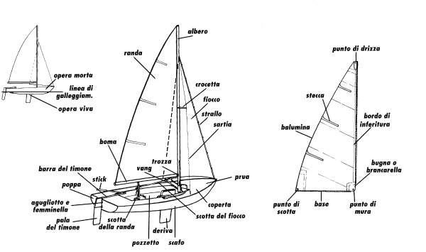

Nomenclatura Base
Conoscere i nomi corretti delle parti di una barca è il primo passo fondamentale per ogni velista. Questo non solo aiuta la comunicazione a bordo, ma è essenziale per capire come la barca funziona e come manovrarla in sicurezza.
Parti Fondamentali
- Scafo: Il corpo principale della barca, la parte che galleggia.
- Albero: Il palo verticale che sostiene le vele.
- Boma: La trave orizzontale incernierata all'albero che tiene tesa la base della randa.
- Randa: La vela principale, situata a poppa (dietro) dell'albero.
- Fiocco: La vela triangolare a prua (davanti) dell'albero.
- Timone: L'organo di governo, utilizzato per dirigere la barca.